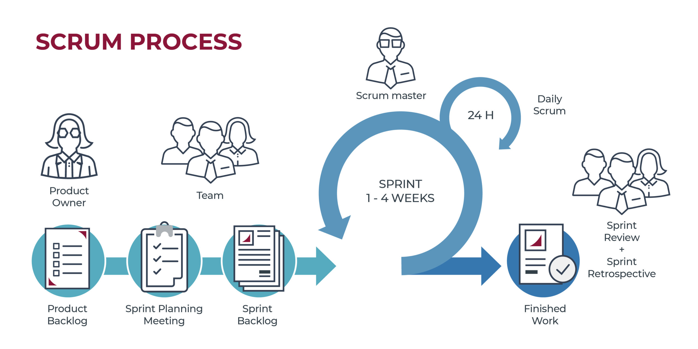

SCRUM
"¿Qué es Scrum?" por AtlassianScrum es un marco de gestión de proyectos de metodología ágil que ayuda a los equipos a estructurar y gestionar el trabajo mediante un conjunto de valores, principios y prácticas.
Aunque son los equipos de desarrollo de software los que utilizan con mayor frecuencia este tipo de scrum, sus principios y lecciones se pueden aplicar a todo tipo de trabajo en equipo. Esta es una de las razones por las que es tan popular. Aunque se considera a menudo un marco de gestión de proyectos ágil, scrum incluye un conjunto de reuniones, herramientas y funciones que, de forma coordinada, ayudan a los equipos a estructurar y gestionar su trabajo.
 Recomendación: Este enfoque se utiliza en situaciones donde se requieren resultados inmediatos, en los casos en que hay mucha ambigüedad y los deberes no están bien definidos, o cuando un cliente solicita un enfoque de desarrollo altamente personalizado para un determinado producto.Kanban
"¿Qué es la metodología Kanban y cómo funciona?" por AsanaKanban es una forma de ayudar a los equipos a encontrar un equilibrio entre el trabajo que necesitan hacer y la disponibilidad de cada miembro del equipo. La metodología Kanban se basa en una filosofía centrada en la mejora continua, donde las tareas se “extraen” de una lista de acciones pendientes en un flujo de trabajo constante.
Kanban es un marco bien conocido para ágil y Desarrollo de software DevOps. Requiere comunicación de capacidad en tiempo real y apertura de trabajo completa.
Kanban es un enfoque flexible de la gestión del trabajo visual que cambia a medida que cambian las necesidades del equipo.
Kanban ayuda en la visualización del trabajo para que pueda entenderse mejor, mostrarse a otros y mantener actualizados a los interesados. Como resultado, podemos asegurar que el servicio es capaz de hacer la tarea que requiere el cliente.
 Recomendación:
Utilice este enfoque cuando necesite eliminar procesos
y prácticas innecesarias, cuando necesite un modelo que proporcione un flujo fluido
del proceso de desarrollo, cuando se busca la mejora continua del sistema.
Recomendación:
Utilice este enfoque cuando necesite eliminar procesos
y prácticas innecesarias, cuando necesite un modelo que proporcione un flujo fluido
del proceso de desarrollo, cuando se busca la mejora continua del sistema.
Extreme Programming (Programación Extrema)
"¿Qué es la programación extrema (XP)?" por AsanaLa programación extrema es una metodología ágil de gestión de proyectos que se centra en la velocidad y la simplicidad con ciclos de desarrollo cortos y con menos documentación.
La técnica de programación extrema permite a los especialistas realizar cambios incluso después de que haya comenzado la iteración. Normalmente toma de 1 a 2 semanas completar una iteración.
El XP o Enfoque de programación extrema es una metodología de desarrollo ágil con el objetivo de desarrollar y gestionar proyectos con eficiencia, flexibilidad y control. Se basa en la comunicación, la reutilización del código generado y la retroalimentación.
Recomendación: Utilice este enfoque cuando requiera comunicación entre el cliente y el equipo siempre abierta, el software funcional tiene prioridad sobre cualquier documentación, o se colabore de forma remota.Proceso unificado racional (RUP)
"Los 9 mejores modelos de desarrollo de software para elegir: fases y aplicaciones" por Pooja sharmaEl Proceso Racional Unificado (RUP) es un desarrollo de aplicaciones de software enfoque que incluye una serie de herramientas para ayudar en la codificación del producto final y las actividades que lo acompañan. RUP es una metodología orientada a objetos para gestión de proyectos y desarrollo de software de alta calidad.
El RUP es un conjunto de enfoques ajustables al entorno y exigencias de cada empresa, más que un sistema con procesos rígidos.
Recomendación: Este enfoque se utiliza cuando hay un cambio constante en los requisitos, cuando se dispone de información y datos veraces, o cuando necesitas ciertas integraciones a lo largo del proceso de desarrollo.